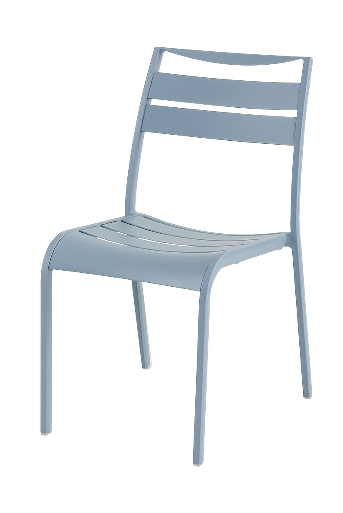

<div class="qv-media">
            <div class="qv-main">
            
        </div>
            </div>

<div class="qv-body">
            <p class="qv-cat">Aluminium</p>
    
    <h2 class="qv-name" id="qvTitle">
                OS901-SC    </h2>

            <p class="qv-type">Side Chair</p>
    
    <div class="qv-meta">
                    <p class="qv-price">
                ¥34,000<span class="qv-price-note">（税別）</span>            </p>
                            <p class="qv-stock">
                <span class="pcx-dot" style="background:#A3E635"></span>
                限定品            </p>
            </div>

            <p class="qv-desc">屋外家具に使用する金属では定番のアルミニウム合金。 軽くて丈夫、腐食にも強いのが特徴です。</p>
    
            <dl class="qv-spec">
                            <dt>サイズ</dt>
                <dd>W485 / D590 / H850 / SH450</dd>
                            <dt>重量</dt>
                <dd>4.2kg</dd>
                            <dt>カタログページ</dt>
                <dd>P.235</dd>
                    </dl>
    
    
    <div class="qv-actions">
        <a class="qv-more" href="product-97.html" data-no-quickview>
            詳細ページを見る <span aria-hidden="true">→</span>
        </a>
            </div>
</div>
